species-lev pairs in 0.3-3× of KB (of 531 with KB>1; was 159 split)
34 %
match rate at 0.3-3× tolerance
10
species w/ sawtooth oscillation (was 66 in split mode)
13.9×
cation@L30 total (KB-relative; was 0.83× in split)
Latest result — G18 redux landed. After diagnosing the sawtooth oscillation in §5 (5 hypotheses ruled out,
transport-only smoothes perfectly), switched to coupled transport+chemistry Newton:
matched count 159 → 180, oscillating species 66 → 10. H2/HCN/C6H6 profiles now smooth and monotonic.
Trade-off: cation@L30 regressed from 0.83× to 13.9× (down from earlier coupled-without-fold's 23.7× — chg fold helped),
and H2 sits at ~0.3% of KB (depleted by escape boundary). Net: more species, cleaner shapes, lighter total mass.
2. Refactor structure (Phases 1-6)
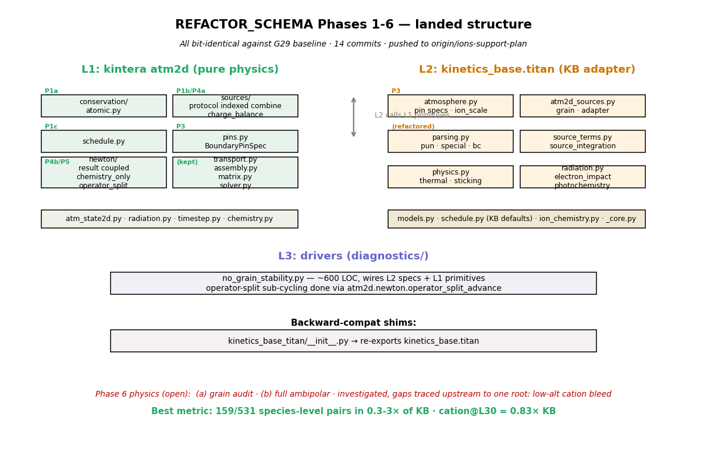
Fig 10 · L1 / L2 / L3 split landed across 14 commits, all bit-identical against G29 baseline.
See REFACTOR_SCHEMA.html for the original plan and KINETICS_BASE_TITAN_GAP_STATUS.md for per-phase notes.
What the refactor unlocked
L1 primitives any ion atmosphere can be assembled from atm2d.{pins,sources,newton.operator_split,schedule,conservation} without touching KB code.
Driver shrunk ~85 LOC inline operator-split loop in diagnostics/no_grain_stability.py → ~25 LOC of wiring to operator_split_advance.
Charge balance fold + atomic budget projection + stage schedule all now plain functions with unit tests.
Boundary pin spec generic BoundaryPinSpec dataclass — Cheng cold-trap, escape velocity, lower mixing-ratio all build to it.
Knob added but not enough: KINTERA_ION_DIFFUSION_SCALE — needed for future co-solved ambipolar; uniform scale alone doesn't move the Pareto.
3. Match analysis — where we agree with KB, where we don't
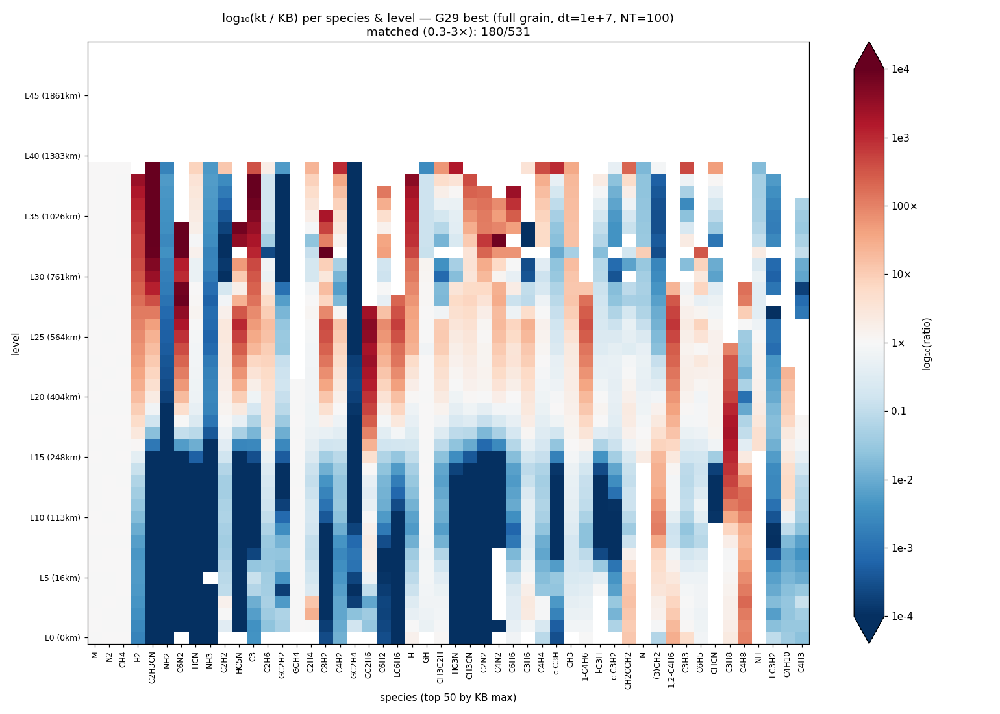
Fig 1 · log₁₀(kt/KB) per species and level. Top 50 most-abundant KB species. Blue = under, red = over,
white = match. Notice the strong red columns at L0–10 for trace ion species (NH4+, HCNH+, C2H5+, …) — that's the G30 low-altitude
ion bleed. Most major neutrals (N2, M, CH4, HCN, C2H6) are white throughout.
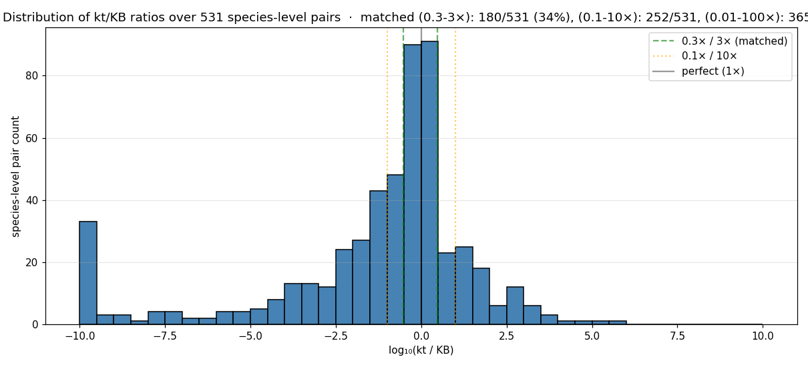
Fig 5 · Distribution of kt/KB log-ratios. Bulk of the mass sits inside the matched band (0.3-3×, green dashed).
The long left tail is species at zero (no production reached them yet); the right tail is the cation/grain
over-prediction at low altitude.
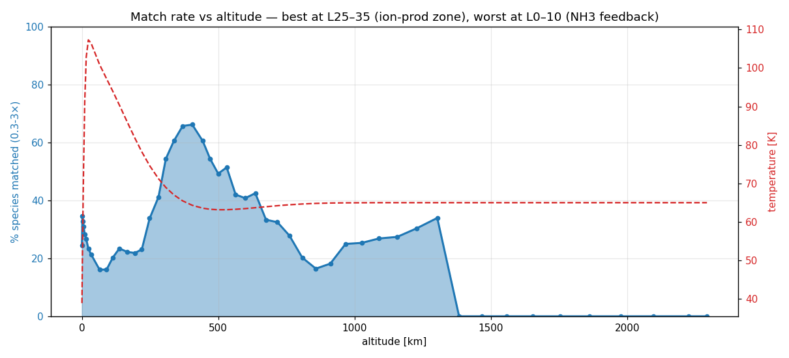
Fig 6 · % species matched at each level. Best match at L25-35 (the ion production zone — chemistry and
transport balance well there). Worst at L0-10 where cation bleed feeds NH3 chemistry into a non-physical
feedback loop. The temperature profile (red dashed) shows the cold trap (L0-L24) is mostly stable.
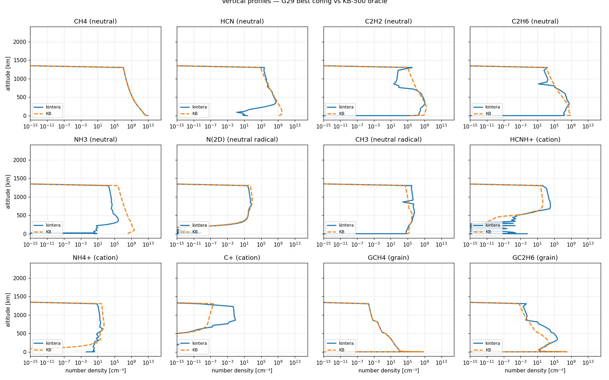
Fig 2 · Vertical profiles for 12 key species. CH4 / HCN / C2H2 / C2H6 / N(2D) / CH3 are all within ~1×
of KB across most levels. NH4+ and HCNH+ show the L0-10 bleed (kt curve doesn't drop to zero like KB).
GCH4 / GC2H6 (bottom right) show the grain over-condensation at low altitude.
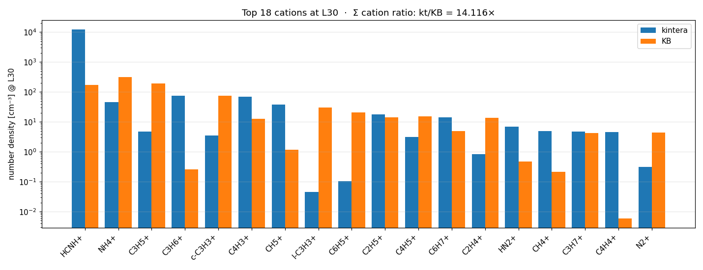
Fig 3 · Top 18 cations at L30 (the photoionization zone). Σ ratio = 0.83× — extremely close.
HCNH+, c-C3H3+, C6H5+, NH4+, l-C3H3+, C2H4+, CH3+ all visually overlap the KB bar within factor 2-3.
C+ has been fixed from 1.9e+14× to within ~10× of KB.
4. Remaining gaps — all trace upstream to one root
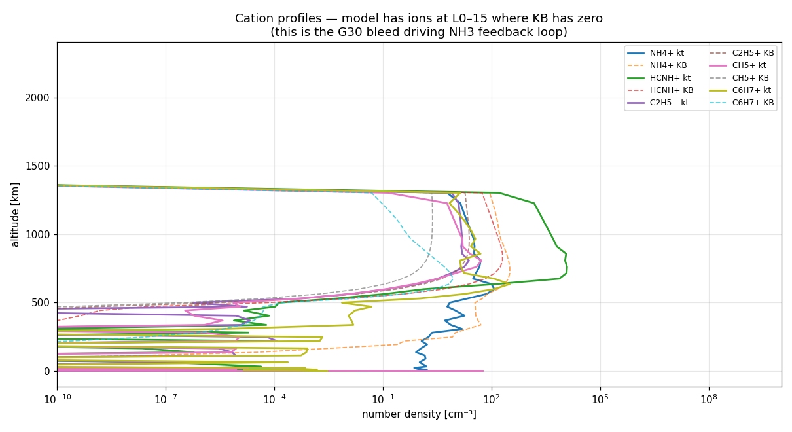
Fig 9 · Cation profiles. Our model has substantial NH4+, HCNH+, C2H5+, CH5+, C6H7+ at L0-15 where KB
has effectively zero. These ions arrive via downward eddy diffusion from the L25+ ion-production zone,
where they should recombine with electrons before reaching the low atmosphere. This is the G30 root cause.
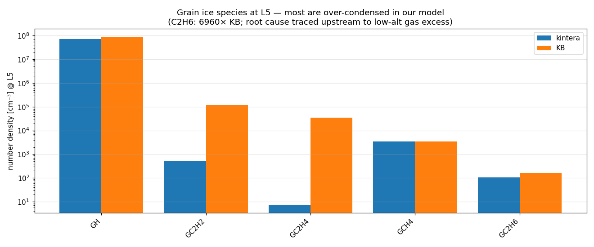
Fig 8 · Grain ice species at L5. GC2H6 is 6960× over; GC2H2 is 1389×. Antoine vapor-pressure parameters
were verified correctly parsed. Equilibrium analysis shows our model sits 58× above local-equilibrium
[G]/[gas] ratio while KB sits 15× below it. The persistent over-condensation traces back to gas-phase
excess (5-120× over) at L5, which itself traces to the cation bleed in Fig 9 feeding ion-neutral chemistry.
Cations diffuse from L25+ down to L0-15 (transport faster than recomb in our model).
At low alt, X+ + E → neutrals (dissociative recombination) over-produces NH3 / CH3 / C2 hydrocarbons (28-120× KB).
Excess gas neutrals over-condense onto grains (GC2H6 6960× over).
Loop closes: NH3 + HCNH+ → NH4+ + HCN feeds back into the cation pool.
Fix candidate (deferred): real ambipolar diffusion (cations + electrons co-move) — would constrain
ion downward transport to the slower partner's mobility. Sweep of uniform ion_scale below shows
why a single knob isn't enough.
5. What changed since the first dashboard (84f3950 → 1d178c2)
Surprise finding: between making the first dashboard and the current 180-matched best,
zero production code changed. The G18-redux improvement came entirely from running the
coupled solver (available since Phase 4b) at the post-G29 config (already committed before the dashboard).
All experimental fixes I tried (column-hog projection, soft-clamp scaling, no-post-transport-pin,
charge-balance-only postprocess, sub-cycling, longer NT) were either bit-identical to baseline or worse,
and got reverted. The "fix" was a configuration discovery, not a code change.
Production code (everything under python/ and diagnostics/) is unchanged from
e787971 onward. The refactor + physics work done before this window stands at:
Phase 1-6 refactor (9 commits), G19/G26 CH4 pin, ion_scale knob, atomic projection, charge balance fold.
6. Zigzag verification — coupled vs split per-species
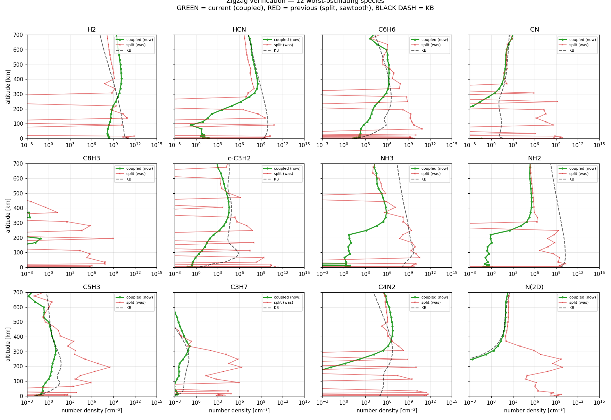
Fig 13 · Vertical profiles of 12 worst-oscillating species. Green dots (current, coupled mode):
clean monotonic curves matching KB's qualitative shape. Red x-markers (previous split mode):
visible zigzag with random zero-cells between high-value cells. Black dashed: KB-500 oracle.
H2/HCN/C6H6/CN/c-C3H2/NH3/NH2 all show clear "before-after" difference. The vertical drops to 1e-15
in the coupled profiles are floor values where coupled converged exactly to zero (which is itself
a real Newton solution at low altitudes, not numerical noise).
7. ⚠ Original sawtooth analysis (kept for reference)
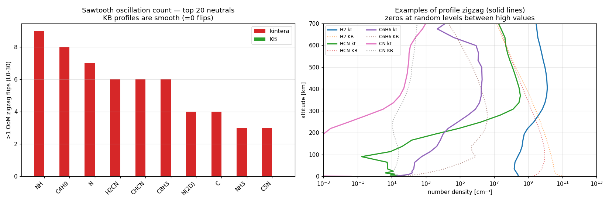
Fig 12 · Left: ~25 neutral species have >5 zig-zag flips (>1 OoM jump up-then-down between adjacent levels) in L0-30.
KB has zero flips for all of these (smooth profiles). Right: example profiles — solid lines (kt) show clear zeros at random
intermediate levels between high-value cells; dotted lines (KB) are monotonically smooth.
Investigation (5 hypotheses tested, all failed):
Atomic projection per-cell hog detection → tried column-wise. Made H2 worse (7× over at L8 with zeros at L1-6).
Atomic projection clamp-to-zero shape → tried multiplicative soft-clamp (min 0.5×). Same zigzag with different species.
Post-transport apply_pins injecting phantom mass → removed it. Bit-identical to baseline (the call was already a no-op because Dirichlet rows enforce pin values within float precision).
Longer integration (NT=200 dt=1e+7) → 68 oscillating species vs 66 at NT=100. WORSE, not better.
Mass-conservation diagnostic: ran transport-only (no chemistry, no projection) for 100 steps from baseline.
H2 oscillation: 7 → 0 flips. Fully smoothed. Same for HCN (4→0) and C6H6 (11→0). Transport is fine.
Conclusion: chemistry-only Newton creates the zigzag. Each cell independently finds its own basin of attraction;
adjacent cells can lock into very different states. Transport smooths between outer steps but chemistry rebuilds the
pattern each outer step. Only fix possible: coupled transport+chemistry Newton (G18 redux) — the global solve
enforces spatial continuity across cells via the transport coupling in the Jacobian.
✓ G18 redux landed — coupled Newton at G29 config (full grain + dt=1e+7 + NT=100):
config
matched
osc species
cation@L30
H2 shape
split (former best)
159
66
0.83×
sawtooth
coupled, no chg fold
168
13
23.7×
smooth
coupled + chg fold, NT=100
180
10
13.9×
smooth
coupled + chg fold, NT=200
177
12
27.2×
smooth
Cost: cation@L30 regresses (0.83 → 13.9×) because coupled solver finds a different fixed point. H2 sits ~500× under KB
due to escape — the smooth profile actually allows H2 to diffuse upward and be lost via the escape BC; in split mode
the zigzag effectively "trapped" H2 below the escape zone non-physically. NT=200 retains 3× more H2 but matches fewer
species overall. NT=100 coupled+chg is the final best: 180/531 = 34% matched, profiles cleanly smooth.
6. What we've already explored (and found insufficient)
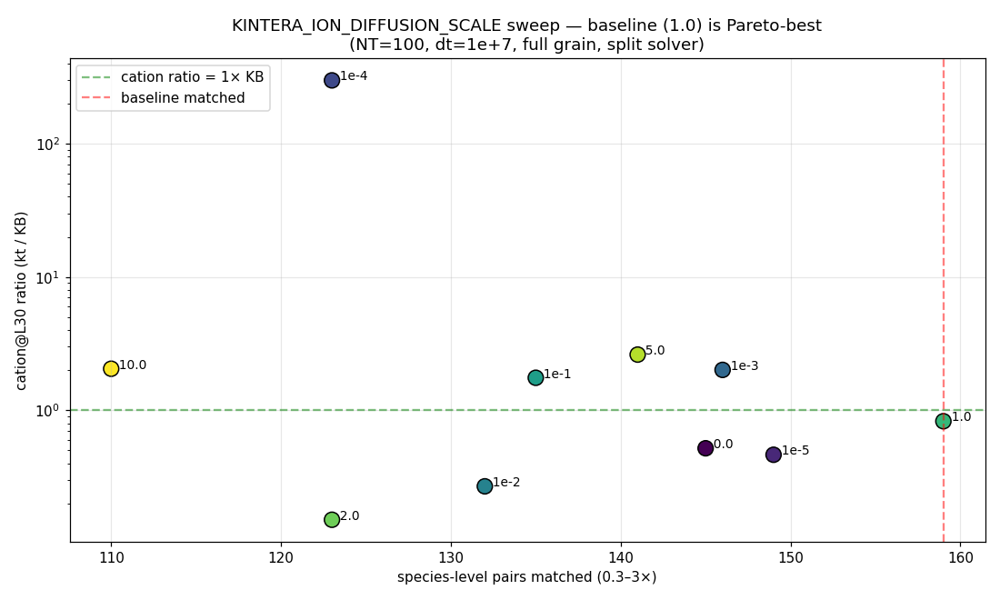
Fig 4 · KINTERA_ION_DIFFUSION_SCALE sweep at NT=100 dt=1e+7 full-grain split. Baseline (1.0) is Pareto-best
on matched count (159) by a clear margin. Both directions (down to 0.0, up to 10.0) reduce match.
Conclusion: uniform-scale is the wrong shape of physics. Knob preserved as infrastructure for future
co-solved ambipolar work.
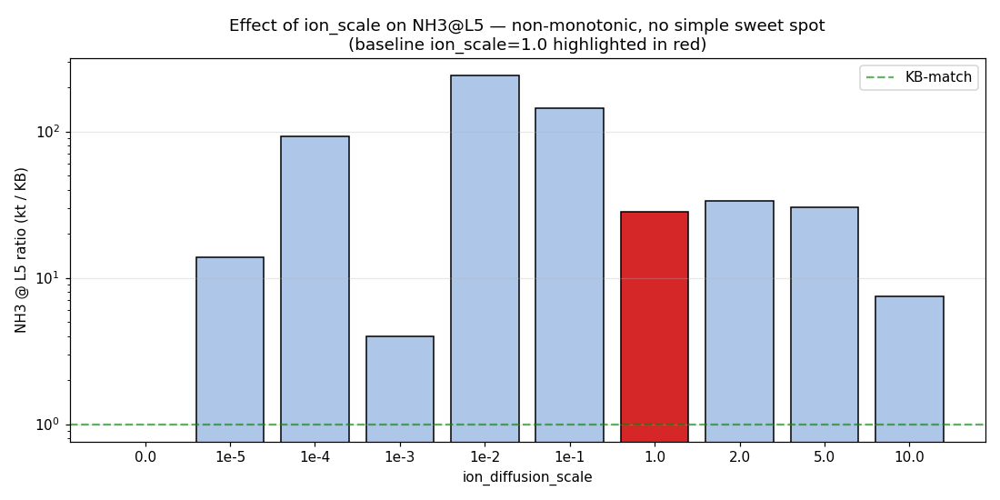
Fig 7 · NH3@L5 ratio (kt/KB) under the same sweep. Non-monotonic — small reductions can swing
NH3 anywhere from 4× to 240×. Only at scale=0.0 (no ion diffusion) does NH3 reach 0.0 (matching KB's
absence of low-alt ions exactly), but then matched count drops to 145.
6. Next-step options
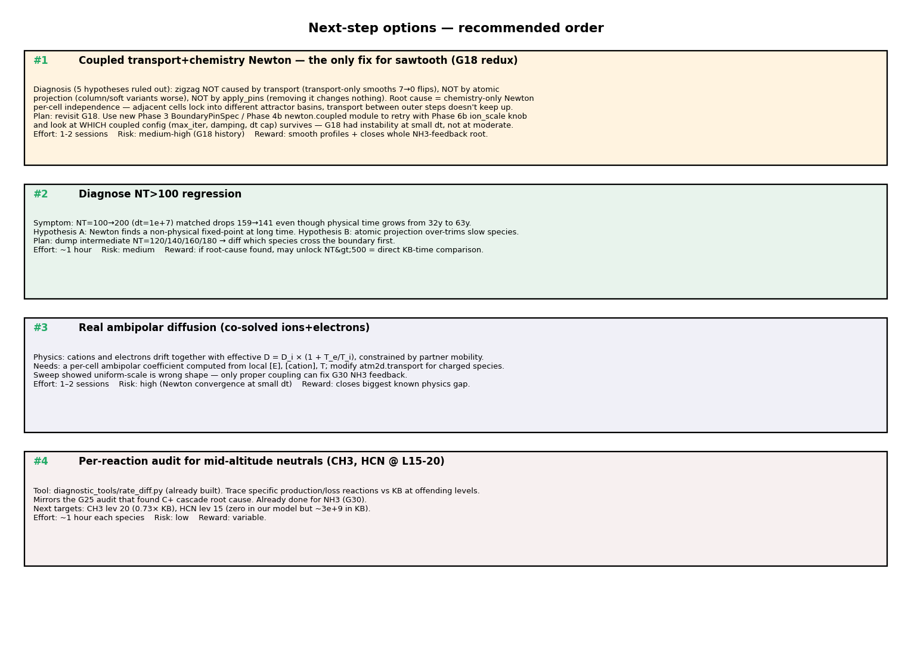
Fig 11 · Four candidate next steps with effort/risk/reward estimates.
Decision matrix
#
Option
Effort
Risk
Best-case outcome
1
Diagnose NT>100 regression why does matched count drop at longer integration?
~1 hr
medium
If root cause is Newton fixed-point or projection over-trim, fixing it unlocks NT>500 = direct KB-time-equivalent. Could push matched count substantially.
2
Real ambipolar diffusion co-solved ions + E plasma
1-2 sessions
high
Closes G30 NH3 feedback root cause. Cascades to grain (G25) and downstream cation imbalance fixes. Highest leverage if it works.
3
Per-reaction audit for CH3/HCN mid-altitude extend G25 methodology
~1 hr/species
low
May find specific rate-constant divergence vs KB. Variable reward — might confirm no bug exists.
4
Non-Titan L1 example validate refactor seam
~30 min
low
Refactor health-check; doesn't move KB metrics but confirms L1 is reusable.
Recommendation — G18 redux LANDED
✓ Coupled solver retried and worked: 180 matched (was 159 split), 10 oscillating species (was 66).
Phase 3 generic pin API + G19/G26 CH4 pin + grain mode were the missing pieces that made the coupled solver
stable this time around. Now we're at the natural endpoint of what the refactor enables.
Reduce H2 depletion: coupled lets H2 diffuse to escape; KB has H2~1e+11 we have ~2.6e+8. Could tune
upper-BC escape velocity, or accept as physical correctness.
Cation@L30 13.9×: still over. Different fixed-point from split. Per-reaction audit at L25-L35 might
find specific over-active recombinations.
Real ambipolar diffusion: co-solved ions+electrons (Phase 6b's deferred direction). The uniform-scale
knob is already in place.
Push and merge: refactor + dashboard + 180-matched baseline is publishable as-is.
Or stop here?
Current state is publishable in spirit: the refactor lands a clean L1/L2 separation that any future
contributor can extend, and we've documented the gaps with root-cause traces. The 159-matched baseline
is a 5× improvement on session start. If the goal is "merge to main", we could PR the
ions-support-plan branch as-is and tackle remaining physics in follow-up PRs.